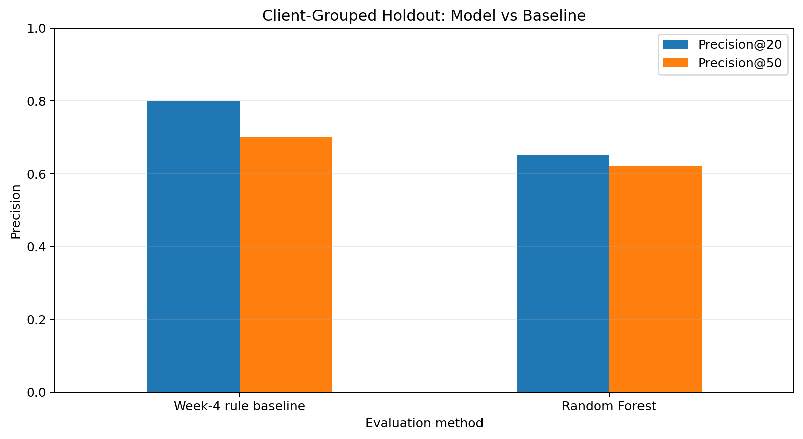

Abstract
This study asks whether historical content and search-performance signals can help editorial teams prioritize content items for human review, including for clients not represented during model training. It analyzes 30,000 anonymized content records across 32 pseudonymized clients, with a binary decline label derived from the supplied trend direction. A leakage-conscious preprocessing pipeline and a 120-tree Random Forest are compared with a recency-and-impressions rule baseline using Precision@20 and Precision@50, with a client-grouped holdout as the primary evaluation. On the held-out clients, the rule baseline achieves 80% Precision@20 and 70% Precision@50, exceeding the Random Forest at 65% and 62%, respectively, while the random-row diagnostic produces substantially more optimistic model results. The resulting workflow is an experimental decision-support and review-queue prototype, not a proven prospective predictor or evidence that refreshing content causes improved search performance.
Introduction
Editorial and SEO teams often manage more content than they can manually inspect at once. A practical workflow needs to help an editor decide which pages to examine first, while leaving the final decision with a person who can assess accuracy, intent, business context and the cost of making an unnecessary change.
This capstone investigates whether a machine-learning ranking can improve that triage process. The unit of analysis is a content item; the output is an ordered review queue. The central question is whether the ranking remains useful when test clients are absent from training.
Data
The analysis uses the anonymized content-refresh dataset supplied for the FlyRank ML internship, stored at data/raw/content_refresh_anonymized.csv. It contains 30,000 rows and 44 source columns; one derived target produces 45 columns in the analysis frame. Each row represents one content item, with 32 pseudonymized clients represented.
| Property | Observed value |
|---|---|
| Records / source columns | 30,000 / 44 |
| Analysis columns including target | 45 |
| Unique content IDs | 30,000; no duplicates observed |
| Pseudonymized clients | 32 |
| Overall observed decline-label prevalence | 54.2% |
| Model features | 32 (23 numeric, 9 categorical) |
Target and observation window
The target is_declining_label is 1 when trend_direction equals “down” and 0 otherwise. The extract includes trailing 90-day metrics and recent 30-day comparisons. Available documentation does not establish exact calendar start and end dates, nor prove that every predictor was measured strictly before the target-generating period; no dates are assumed.
Exclusions and data quality
content_id and client_id are not model features; the latter is used only to define validation groups. The target-generating fields trend_direction and trend_pct, direct recent-period label ingredients (impressions, clicks and sessions for the last and previous 30-day windows), and provider_used/model_used are excluded. This reduces direct leakage from fields that encode or closely construct the observed label.
The feature frame contains 32 eligible predictors. word_count and char_count are each missing in approximately 25.7% of rows. Numeric missing values use training-set median imputation with missingness indicators; categorical values use most-frequent imputation. Transformations are fitted within the pipeline on training data only.
Methodology
Preprocessing and model
Numeric predictors are median-imputed with missingness indicators. Categorical predictors are most-frequent imputed and one-hot encoded, with unknown-category handling and minimum frequency 10. The classifier is a Random Forest with 120 trees, minimum leaf size 5, class_weight="balanced_subsample", parallel execution and random seed 42. Positive-class probabilities are used as ranking scores.
Transparent baseline
The Week 4 baseline selects items whose last update was at least 180 days ago and whose trailing 90-day impressions are at least 3,000. Eligible items are ranked by their 90-day impression count; ineligible items receive a score of zero. This comparator tests whether a more complex model adds value beyond a recency-and-reach heuristic.
Validation and metrics
The primary evaluation uses a single GroupShuffleSplit with a 20% test fraction and seed 42, grouping by client. Training contains 25 clients (23,837 records); testing contains 7 unseen clients (6,163 records). An assertion verifies zero client overlap. Both model and baseline are evaluated on the same held-out records.
A stratified random-row 80/20 split is included as a diagnostic only. It is not the headline estimate because records from the same clients can appear in both partitions. Precision@K is the fraction of items labelled down among the top K ranked records, reported at K=20 and K=50.
Results
The client-grouped test set contains 6,163 records from seven clients and has an observed decline-label prevalence of 51.1% (3,149 of 6,163). Both approaches are evaluated against the same labels and held-out records.
| Method | Precision@20 | Precision@50 |
|---|---|---|
| Week 4 rule baseline | 80% | 70% |
| Random Forest | 65% | 62% |
| Model minus baseline | −15 pp | −8 pp |

The Random Forest does not outperform the simpler rule baseline on the primary grouped holdout. This is the central result, not a result to hide. For a team seeking a shortlist of pages to inspect, the tested heuristic is the stronger of the two approaches under this split and metric. The evidence does not justify replacing the baseline.
Why the split changes the story
In the random-row diagnostic, the Random Forest reaches 100% Precision@20 and 98% Precision@50, while the baseline reaches 60% and 64%. These diagnostic values are markedly higher for the model than its client-grouped results. The contrast illustrates why row-level splitting can overstate generalization when client-specific patterns are shared across partitions.
At a fixed 0.50 classification threshold, the grouped holdout classification report gives 59% accuracy. For the “labelled down” class, precision is 0.60 and recall is 0.61. These threshold metrics answer a different question from the top-K ranking metrics and should not be substituted for them.
Limitations
- Observed proxy label. The target is derived from supplied trend direction, itself associated with trend percentage. It is not a verified future decline event.
- Temporal ambiguity. The extract does not establish a precise calendar window or prove that all features precede the label period. This is not a prospective forecasting study.
- Single grouped split. One holdout tests seven unseen clients. It is not a repeated cross-client study and does not guarantee performance on future clients.
- Baseline strength. The recency-and-impressions rule beats the Random Forest on the primary ranking metrics. More complexity is not justified by these results.
- No causal estimate. No randomized or quasi-experimental design measures whether refreshing a page changes search performance.
- Reason-code scope. Queue reason codes are transparent heuristics, not SHAP explanations or causal drivers.
- Data coverage. Missingness and the anonymized single-snapshot structure may affect transportability.
All outputs should be treated as experimental prioritization signals for human inspection. They should not trigger automatic content changes, performance guarantees or client-facing claims about expected uplift.
Ranked recommendations
- Keep the rule baseline as the first-pass shortlist. It achieved stronger Precision@20 and Precision@50 on the primary holdout. Preserve its eligibility conditions as a transparent triage rule, not an automatic refresh mandate.
- Require editorial verification. Check factual accuracy, search intent, content quality, current SERP context, conversion value and whether a refresh is appropriate.
- Use the model as a challenger, not a replacement. Retain its ranked output for comparison and error analysis. Reconsider deployment only if repeated client-grouped and time-aware evaluations show consistent incremental value over the baseline.
- Improve temporal validation and label design. Establish explicit feature and label windows, define a future outcome independently of same-period trend fields, and evaluate on a later period where available.
- Monitor by client and content segment. Track precision, coverage and review outcomes separately across clients and content types.
Notebook reason-code categories include stale/high-value content, position opportunity, low engagement and a general model-review flag. They prompt inspection and must be checked against the page itself.
Reproducibility and artifacts
The repository contains the Week 1–8 assignment notebooks, final capstone notebook, anonymized source extract and aggregate artifacts. The primary run uses random seed 42 and asserts that the grouped training and test client sets are disjoint.
- Capstone notebook · Open in Google Colab
- Browse assignment notebooks
- Aggregate evaluation metrics (JSON)
- Client-grouped comparison chart (PNG)
- Source repository on GitHub

Re-run procedure
- Open the capstone notebook in Google Colab.
- Run the notebook from the first code cell to the final cell. It clones the repository and loads
data/raw/content_refresh_anonymized.csv. - Confirm 23,837 training rows, 6,163 test rows, 25 training clients, 7 test clients and zero client overlap.
- Confirm the generated metrics JSON and comparison chart match the committed aggregate results.
The committed metrics file is the source of the aggregate values reported here. No row-level predictions, content IDs, client IDs, private queries or private URLs are reproduced on this page.
Data credit
Built on the FlyRank ML Internship dataset.
This work is an internship capstone research exercise. Findings are limited to the supplied anonymized extract and validation design described in this paper.